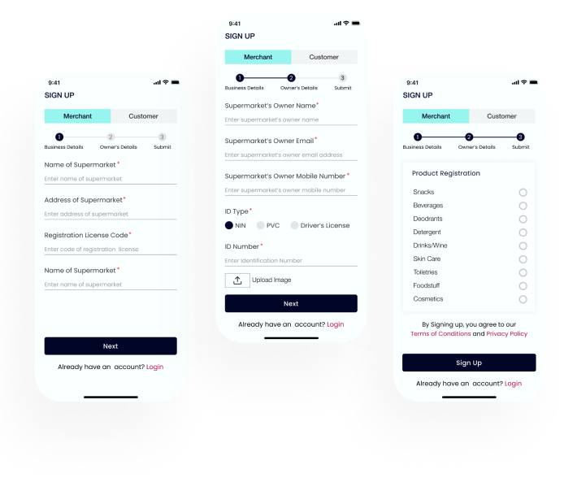

About The Project
Project Brief
The world is evolving around the internet and digital solutions.
Individuals and firms are swifting towards buying and selling
things over the internet. Selling online can help a business
reach new markets and increase sales and revenue. Searching for
products and services online can save time and money by,
allowing one to find the best prices without having to do all
the legwork. Thus, this project.
Why Ventri
Ventri is an E-commercce application that connects buyers and sellers
together, and supports information exchange between them. Ventri
saves the buyers the stress of legwork in searching and buying a
product, thereby overcoming the barrier of distance and ttime. It
is aso a platform where merchants (business owners) create awareness
of their business, reach a wider market and maxmize business profit.
Business Opportunity
Ventri focuses on connecting buyers and sellers that are within a close rane of distance.
Therefore, it will not be competing with other e-commerce brands, where buyers and
sellers from different locations, both far and near are connected together. In Ventri,
the buyer can easily see the different stores around his area, their respective proximity
range to his location and their available products. This provides the buyer with the choice
of either requesting a delivery or easily picking up the product from the store.
Only a few competitors exist in the market as the concept is relatively new and this increases
the chances of the application to outshine the others, thereby creating a business opportunity
and eventually generating revenue.
Target Audience
Ventri is targeted at two categories of users;
The Merchants and The Buyers
Artifacts Used in this Project
User Research Methods
In order to create an optimal product for the users, I carried out
a research to understand the users better and how they feel about
the already existing system of buying and selling online. In the
course of this research, I carried out surveys and questionnaire,
user interviews, Empathy map and user persona.
User Interview
I interviewed three users in person, one being a merchant and the other
two customers. The aim was to understand what motivates them and
frustrates them about buying and selling products online.
Online Surveys And Questionnaire
I created an online survey questionnaire to better understand the users
and their experiences about buying and selling products online.
Proposed Solution
 Verification Of Users
Verification Of Users
The details of the users and their business (in the case of a merchant) would be verified upon signing up into the platform.
Desired Proximity Range
The users (customers)can search for a particular product in shops within their desired proximity range. Hence, he would be able to see
all the shops within that proximity range that have that particular product.
Delivery Request
The users are provided with the option of either going in person to pick up the product or placing an order for delivery.
Track Delivery
In the case of delivery, the customer can track the delivery order.
Product Notification
The users (merchant) are notified when they are running short of a particular product.
The Sketch
In order to explore,refine and communicate my ideas better, I did a rough sketch of the work,
hence providing a brief account and general outline of the project.
The Low Fidelity WireFrame
The High Fidelity WireFrame
This is the visual design of the app. It captures the look and feel of the product.
Buyers’ Sign Up and Login Screen
The sign up is split into two; for the merchants and the customers. During the sign up, relevant details of the users are collected.
Merchants’ Sign Up Screen
The details of the merchants are first verified to ensure they are a trusted business brand before they are registered on the platform.

The Home Screen and Filter screen
The users can easily search for any product of their choice using the filter, where he can indicate the proximity range of the shop where he intends to buy the product from.
Merchant’s Home Screen
The details of the merchants are first verified to ensure they are a trusted business brand before they are registered on the platform.
My Cart Screen
Once a product is confirmed available within the proximity range of the buyer, he adds it to his cart and could proceed to purchase it through delivery or go in person to buy it.
Track Order
if the buyer request for a delivery, he gets a message on the success of his order and is able to track the delivery.
Conclusion
Everyday, we keep adjusting towards a stress-free lifestyle. Nobody wants
to go through the stress of moving from one shop to the other searching
for a particular product or thinking of how to get the product. Ventri
saves one that stress and also helps merchants/shop owners in creating
awareness for their business, thus creating and maintaining an online
presence for them.
As almost everything is done over the internet, there is also the need for
security of privacy to be ensured and online verification of every account
even in e-commerce business. And this wraps it up.
Thank you for reading